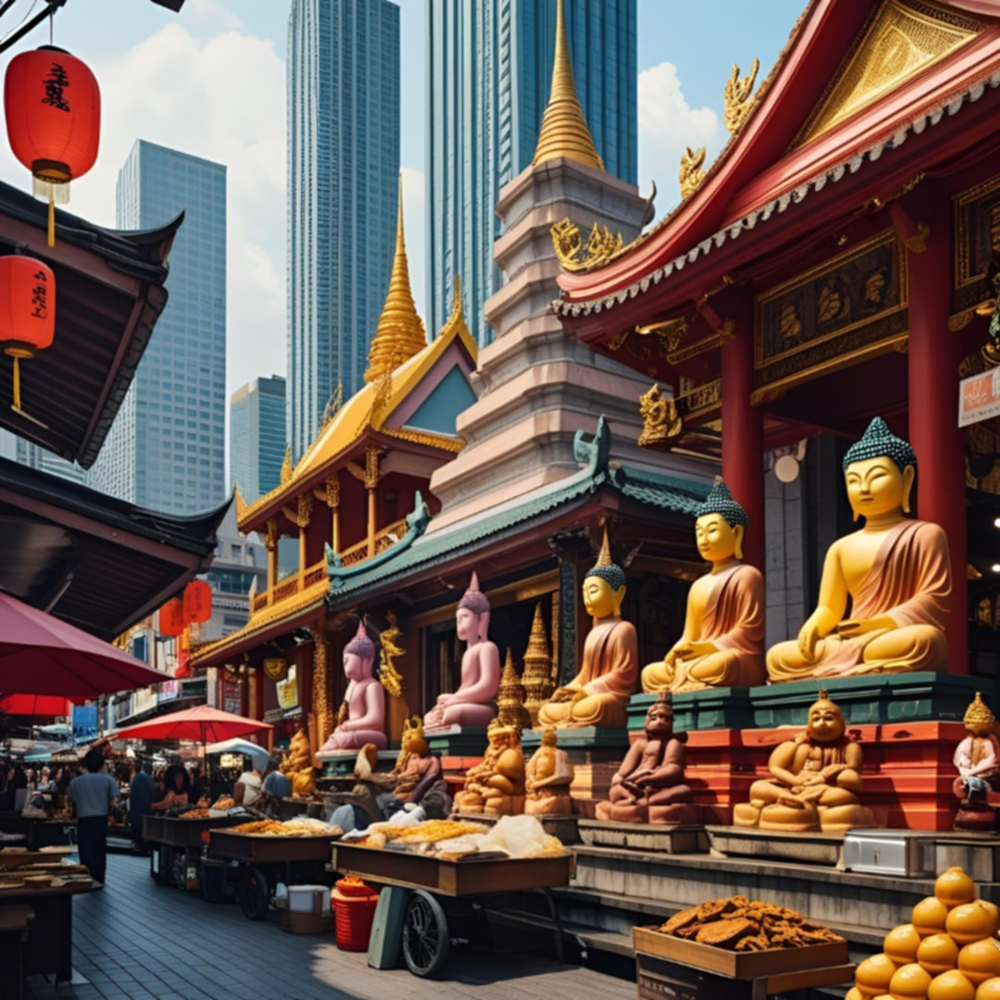

Let's Go Visit Thailand!
Thailand is one country in Southeast Asia worth visiting if you are a culture-oriented person. Why? There are countless reasons. First, Bangkok, the capital city, is just three and a half hours of flight away.
The fare is not that much compared to other cities. Very interesting are the various types of statues of Buddha in temples of worship. The floating markets are an awesome sight and place to be if you are to spend your whole day with adventure.
A four-day-three-night stay in Bangkok may just be a dream. However, it is its amazing culture that attracts visitors to return again and again.